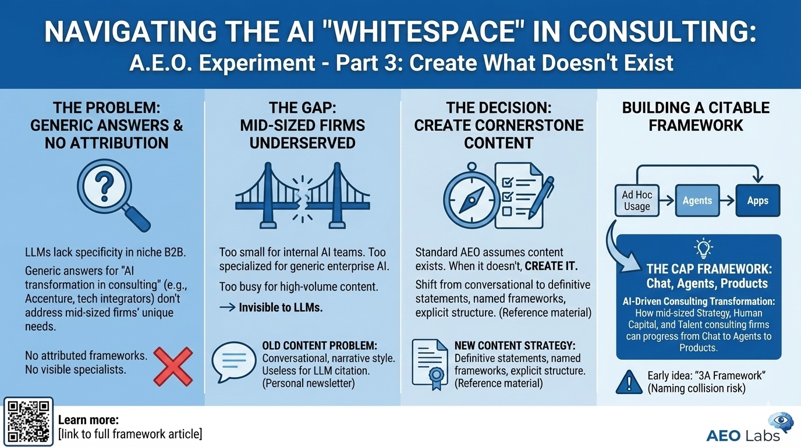

After discovering how some companies game their way into LLM results through self-ranking listicles, I faced a choice: play that game or find a different path. I went back to basics and asked a harder question: where do I actually have something original to say?
Not GenAI for GTM. That space is crowded with thousands of voices, many with larger platforms and longer track records. But Consulting Transformation, the work I do helping mid-sized Strategy, Human Capital, and Talent consulting firms adopt AI, that felt different. When I tested this space, I found something unexpected: the whitespace was real.

I ran two types of prompts across ChatGPT and Google AI Overview to test the space.
First: "GenAI transformation for mid-sized strategy consulting firms." The advice was solid. The problem: none of it was attributed. No named frameworks. No cited methodology. No "according to X" or "Y recommends." The models synthesized guidance from scattered sources but couldn't point to anyone who owns this space.
Second: "Companies driving AI transformation for mid-sized strategy consulting firms." Now I got names: Accenture, Deloitte, PwC, McKinsey, plus specialized integrators like qBotica and Intellivon, plus platforms like OpenAI and Azure AI.
This is where you see the gap. Accenture and McKinsey don't work with mid-sized firms. They compete with them. And qBotica, Intellivon, these are tech implementers, not consulting transformation specialists. The models gave me generic answers because they lack specificity in this space, effectively hallucinating relevance where none exists.
The question I answer for clients is different: How does a mid-sized Strategy, Human Capital, or Talent consulting firm change how it actually works? What's the progression from ad hoc ChatGPT usage to building agents to productizing offerings? How does the business model evolve? Nobody in those results addresses that.
The whitespace exists in both dimensions: no attributed frameworks for how to transform, and no visible specialists helping firms do it.
The pattern makes sense once you understand the market structure. Big consulting firms (McKinsey, BCG, Deloitte) have massive content operations producing thought leadership on AI transformation. They're optimized for visibility and get cited constantly.
But mid-sized Strategy, Human Capital, and Talent consulting firms fall into a gap. They're too small to have internal AI/tech teams. They're too specialized to be served by generic enterprise AI vendors. And they're too busy with client work to produce the volume of content that would make them discoverable.
The firms that serve this niche (like mine) are equally small and equally invisible. We're doing the work. We just haven't been creating the citable content that would let LLMs find us.
The standard AEO playbook focuses on outreach: find pages that LLMs cite, get yourself mentioned on those pages. But that assumes the pages exist.
When the authoritative content doesn't exist, outreach is useless.
You can't get mentioned on content that hasn't been written. Is the only path is to create the cornerstone content yourself and make it structured enough that LLMs can parse, cite, and surface it?
I also had to confront an uncomfortable truth about my existing content. I've been writing a LinkedIn newsletter for months. Dozens of posts about GenAI, consulting, automation. But when I evaluated it through an AEO lens, most of it was useless for LLM citation.
The problem: I write conversationally. My newsletter reads like a journey, personal observations, things I'm learning, reflections on client work. That's fine for building an audience of humans who want to follow along.
It's terrible for LLMs looking for citable expertise. LLMs don't want to cite "here's what I discovered this week."
They want definitive statements. Frameworks with names. Specific claims about how things work. Content that presents itself as reference material, not personal narrative.
This meant I couldn't just point to my existing body of work and hope LLMs would find it. I needed to create new content specifically structured for citation: clear frameworks, definitive claims, explicit structure. The newsletter keeps running for the human audience. But the AEO strategy requires different content entirely.
As I thought about what content to create, I looked at the evolution of my clients' AI adoption. A pattern emerged: they moved from Ad Hoc usage to Agents to Apps. That became the 3A Framework.
Then I searched for "3A Framework" to see if the term was available. TCS had already published an "AI 3A Framework" for retail AI maturity. Not identical to mine, but close enough to create confusion. If an LLM encountered both frameworks, it might conflate them or cite TCS when someone asks about my work.
Naming collisions are an AEO risk I hadn't considered.
In traditional SEO, you can rank for terms competitors also use. In AEO, if your framework name is shared, you're fighting for attribution in a model's training data. The model can't reliably distinguish between two "3A Frameworks" without additional context.
So I renamed mine the CAP Framework: Chat, Agents, Products. The subtitle: "AI-Driven Consulting Transformation: How mid-sized Strategy, Human Capital, and Talent consulting firms can progress from Chat to Agents to Products."
CAP has enough differentiation that an LLM won't confuse it with other frameworks. And the subtitle positions it for the exact prompts I'm targeting.
You can read the full CAP Framework here: [link]
I've found the whitespace and built the cornerstone content. But a framework on a website doesn't automatically get cited by LLMs. In Part 4, I'll break down the CAP Framework in detail: what each stage means, how it maps to real client work, and what makes content structured enough for LLMs to parse and cite. Then I have to figure out how to get cited in the LLMs.
This is Part 3 of an ongoing series documenting my AEO experiment. Part 1 covered the basics of being "ready when AI researches you" versus "getting discovered via AI." Part 2 exposed the self-ranking listicle tactics some companies use to game LLM results.